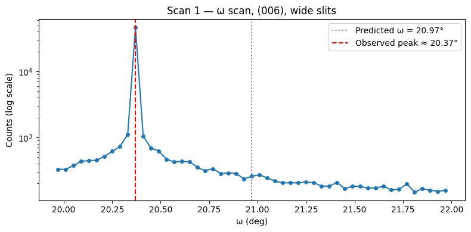
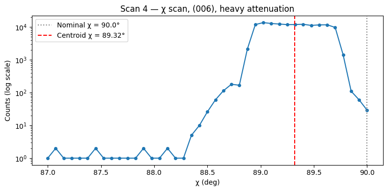

Note
This page was generated from a Jupyter notebook. Download the notebook to run it locally — it requires only ad_hoc_diffractometer, NumPy, and Matplotlib.
Align a Four-Circle Diffractometer (fourcv)#
This notebook is a how-to guide for aligning a crystal on a four-circle
Eulerian diffractometer in the vertical scattering plane
(ahd.make_geometry("fourcv")),
the synchrotron convention where ω and 2θ rotate about the transverse axis.
The example uses sapphire (α-Al₂O₃) with the (001) axis pre-aligned along the φ-axis — a common starting configuration at synchrotron beamlines. The motor-angle values are drawn from a real alignment session at APS 7-ID-C (December 2020, private communication, D.A. Walko).
Alignment steps#
Create the geometry and set the wavelength
Set the sample lattice constants
Predict Bragg peak positions
Enter the primary orienting reflection (calculated position)
Enter the secondary orienting reflection (geometric placeholder)
Compute the orientation matrix
Verify the orientation — direction check
Scan to find the peak; update the primary reflection with the measured position
Re-compute and display the refined orientation
Before you begin#
This guide uses ahd.make_geometry("fourcv") — the synchrotron four-circle with ω and 2θ
both rotating about the transverse axis (vertical scattering plane).
Users familiar with SPEC will recognize the workflow: the steps parallel
SPEC’s setor0/setor0, pa, ca, and wh commands,
but everything runs in pure Python with no hardware connection.
References#
W.R. Busing & H.A. Levy, Acta Cryst. 22, 457–464 (1967)
D.A. Walko, Ref. Module Mater. Sci. Mater. Eng. (2016)
D.A. Walko, private communication (December 2020) — APS 7-ID-C sapphire alignment session
Step 0 — Imports#
import math
import matplotlib.pyplot as plt
import numpy as np
import ad_hoc_diffractometer as ahd
%matplotlib inline
plt.rcParams["figure.figsize"] = (8, 4)
Step 1 — Create the geometry and set the wavelength#
ahd.make_geometry("fourcv") creates a four-circle Eulerian diffractometer in the
vertical scattering plane (synchrotron convention). ω and 2θ both
rotate about the transverse axis (−x in the Busing & Levy coordinate
system), so the scattering plane is vertical.
The four stages and their rotation axes in the BL1967 basis (transverse = +x, longitudinal = +y, vertical = +z):
Stage |
Axis |
Handedness |
Role |
|---|---|---|---|
|
transverse |
left-handed (−x) |
sample |
|
longitudinal |
right-handed (+y) |
sample |
|
transverse |
left-handed (−x) |
sample |
|
transverse |
left-handed (−x) |
detector |
import ad_hoc_diffractometer.axes as ahd_axes
g = ahd.make_geometry("fourcv")
# Wavelength from the beamline monochromator at APS 7-ID-C
g.wavelength = 1.5498 # Angstroms
print(f"Geometry : {g.name}")
print(f"Wavelength: {g.wavelength} Å")
print(f"Description: {g.description}")
print()
print("Sample stages:")
for s in g.sample_stages:
print(f" {s.name:8s} axis = {ahd_axes.axis_label(s.axis)}")
print("Detector stages:")
for s in g.detector_stages:
print(f" {s.name:8s} axis = {ahd_axes.axis_label(s.axis)}")
Geometry : fourcv
Wavelength: 1.5498 Å
Description: Eulerian Four-Circle (vertical).
Busing & Levy (1967) four-circle Eulerian diffractometer; vertical
scattering plane, transverse ttheta, synchrotron convention.
Walko (2016) designation: S3D1.
Synchrotron configuration: omega and ttheta both rotate about the
transverse axis, so the scattering plane is vertical. This exploits
the s-polarization and tighter vertical collimation of synchrotron
radiation (Walko 2016).
Default basis: Busing & Levy (1967) — transverse=+x, longitudinal=+y,
vertical=+z.
Sample stack (floor first):
omega : transverse, left-handed
chi : longitudinal, right-handed
phi : transverse, left-handed
Detector (floor, mechanically independent of sample stack):
ttheta : transverse, left-handed
omega and ttheta share the same transverse axis; they are
mechanically independent.
References
- W.R. Busing & H.A. Levy, Acta Cryst. 22, 457-464 (1967).
- D.A. Walko, Ref. Module Mater. Sci. Mater. Eng. (2016).
Sample stages:
omega axis = -x
chi axis = +y
phi axis = -x
Detector stages:
ttheta axis = -x
Step 2 — Set the sample lattice constants#
Sapphire (α-Al₂O₃) is trigonal / hexagonal:
Parameter |
Value |
|---|---|
a = b |
4.785 Å |
c |
12.991 Å |
α = β |
90° |
γ |
120° |
ahd.Lattice deduces the crystal system automatically.
Supplying a, c, and gamma=120 is sufficient for a hexagonal lattice.
# Hexagonal lattice: a, c, and gamma=120 are sufficient.
# ahd.Lattice deduces the crystal system automatically.
g.sample.lattice = ahd.Lattice(a=4.785, c=12.991, gamma=120.0)
print(g.sample.lattice)
print()
print("B matrix (reciprocal lattice, Å⁻¹, BL1967 convention with 2π):")
print(np.round(g.sample.lattice.B, 6))
print()
print("Reciprocal lattice parameters (a*, b*, c* = norms of the columns of B):")
b1, b2, b3 = g.sample.lattice.reciprocal_lattice_vectors
print(f" a* = {np.linalg.norm(b1):.6f} Å⁻¹ (SPEC #G1: 1.516238 Å⁻¹)")
print(f" b* = {np.linalg.norm(b2):.6f} Å⁻¹")
print(f" c* = {np.linalg.norm(b3):.6f} Å⁻¹ (SPEC #G1: 0.483657 Å⁻¹)")
Lattice(hexagonal: a=4.785000 Å, c=12.991000 Å)
B matrix (reciprocal lattice, Å⁻¹, BL1967 convention with 2π):
[[ 1.516238 0.758119 -0. ]
[ 0. 1.3131 -0. ]
[ 0. 0. 0.483657]]
Reciprocal lattice parameters (a*, b*, c* = norms of the columns of B):
a* = 1.516238 Å⁻¹ (SPEC #G1: 1.516238 Å⁻¹)
b* = 1.516238 Å⁻¹
c* = 0.483657 Å⁻¹ (SPEC #G1: 0.483657 Å⁻¹)
The reciprocal lattice parameters include the 2π factor
(a* = 1.516 Å⁻¹, c* = 0.484 Å⁻¹), consistent with the
Busing & Levy (1967) and SPEC pa convention.
Step 3 — Predict Bragg peak positions#
Before moving any motors, use Bragg’s law to predict where each reflection should appear:
The B matrix follows the Busing & Levy (1967) and SPEC convention:
it includes the 2π factor, so |B @ h| = 2π/d_hkl (in Å⁻¹).
This is consistent with UB @ hkl = Q_phi where
|Q_phi| = (2π/λ) · 2 sin θ.
def bragg_angles(geometry, h, k, l):
"""
Return (d_hkl in Å, 2theta in degrees) for reflection (h, k, l).
Uses Bragg's law: λ = 2 d sin θ.
The B matrix includes the 2π factor (BL1967 convention), so
d = 2π / |B @ hkl|.
Returns (d, None) if the reflection is not reachable at the current
wavelength (sin θ > 1).
"""
B = geometry.sample.lattice.B
q_vec = B @ np.array([h, k, l], dtype=float)
q_mag = np.linalg.norm(q_vec) # = 2π/d_hkl (Å⁻¹, BL1967)
d = 2.0 * math.pi / q_mag
sin_theta = geometry.wavelength / (2.0 * d)
if sin_theta > 1.0:
return d, None
tth = 2.0 * math.degrees(math.asin(sin_theta))
return d, tth
reflections_to_check = [(0, 0, 6), (1, 0, 0), (1, 0, 4), (0, 0, 12)]
print(f"{'hkl':>12s} {'d (Å)':>8s} {'2θ (deg)':>10s}")
print("-" * 36)
for hkl in reflections_to_check:
d, tth = bragg_angles(g, *hkl)
tth_str = f"{tth:10.4f}" if tth is not None else " unreachable"
print(f"({hkl[0]:1d} {hkl[1]:1d} {hkl[2]:2d}) {d:8.4f} {tth_str}")
print()
_, tth_006 = bragg_angles(g, 0, 0, 6)
print(f"SPEC 'ca 0 0 6' prediction: 2θ = 41.9419°")
print(f"Our Bragg prediction: 2θ = {tth_006:.4f}°")
hkl d (Å) 2θ (deg)
------------------------------------
(0 0 6) 2.1652 41.9418
(1 0 0) 4.1439 21.5551
(1 0 4) 2.5562 35.2929
(0 0 12) 1.0826 91.4156
SPEC 'ca 0 0 6' prediction: 2θ = 41.9419°
Our Bragg prediction: 2θ = 41.9418°
With the (001) axis pre-aligned along the φ-axis, the (006) reflection sits in the vertical scattering plane when χ = 90° (tilting the c-axis into the plane). In bisecting mode (ω = 2θ/2), the predicted position is:
2θ ≈ 41.94° ω ≈ 20.97° χ = 90° φ = 0°
Step 4 — Enter the primary orienting reflection (calculated position)#
The primary orienting reflection (or1) is entered at its calculated position before any scanning. This gives the package enough information to compute a provisional orientation matrix.
The primary reflection is recorded at its calculated position
(equivalent to SPEC’s setor0):
hkl = (0, 0, 6)
2θ = 41.9419° ω = 20.97° χ = 90° φ = 0°
Note that χ = +90° is used (not the −90° that g.forward() may
return as its first solution). With the c-axis nominally along the
φ-axis, χ = +90° brings c* into the vertical scattering plane without
requiring φ to move to −90°.
# Calculated position of (006) — χ = +90° to bring c-axis into scattering plane
or1_angles_calc = {
"ttheta": 41.9419,
"omega": 20.97,
"chi": 90.0,
"phi": 0.0,
}
g.add_reflection(
"or1",
hkl=(0, 0, 6),
angles=or1_angles_calc,
wavelength=g.wavelength,
)
g.sample.reflections.setor0("or1")
r = g.sample.reflections["or1"]
print(f"or1 hkl : {r.hkl}")
print(f" angles : {r.angles}")
print(f" lambda : {r.wavelength} Å")
or1 hkl : (0.0, 0.0, 6.0)
angles : {'ttheta': 41.9419, 'omega': 20.97, 'chi': 90.0, 'phi': 0.0}
lambda : 1.5498 Å
Step 5 — Enter the secondary orienting reflection (geometric placeholder)#
A single reflection constrains only one reciprocal-lattice direction. A second, non-parallel reflection is needed to fully define the crystal orientation.
A second reflection 90° away in φ is recorded as a geometric placeholder
(equivalent to SPEC’s setor0):
hkl = (1, 0, 0)
2θ = 60° θ = 30° χ = 0° φ = 0°
Accommodation:
2θ = 60°is not the Bragg angle for (1, 0, 0) of sapphire at λ = 1.5498 Å. The true Bragg angle is 2θ ≈ 18.64°. SPEC accepts this geometric placeholder because the UB algorithm uses only the direction of the scattering vector (normalized), not its magnitude, to build the orientation matrix.
ahd.ub_from_two_reflections_bl1967follows the same Busing & Levy algorithm and therefore also accepts this placeholder. The consequence is a ~7° directional misalignment for the secondary reflection in the direction check (Step 7) — expected and acceptable at this stage.
# Geometric placeholder for the secondary reflection:
# 2θ = 60° is NOT the Bragg angle for (1,0,0) of sapphire at λ = 1.5498 Å.
# The true Bragg 2θ for (1,0,0) is ~18.64°.
# This position is used only to define the φ-rotation plane direction.
or2_angles = {
"ttheta": 60.0,
"omega": 30.0,
"chi": 0.0,
"phi": 0.0,
}
_, tth_100_true = bragg_angles(g, 1, 0, 0)
print(f"True Bragg 2θ for (1,0,0) at λ={g.wavelength} Å: {tth_100_true:.4f}°")
print(f"Geometric placeholder 2θ used: {or2_angles['ttheta']:.4f}°")
print(f"Difference: {or2_angles['ttheta'] - tth_100_true:.4f}° (accepted by BL1967 algorithm)")
print()
g.add_reflection(
"or2",
hkl=(1, 0, 0),
angles=or2_angles,
wavelength=g.wavelength,
)
g.sample.reflections.setor1("or2")
r = g.sample.reflections["or2"]
print(f"or2 hkl : {r.hkl}")
print(f" angles : {r.angles}")
print(f" lambda : {r.wavelength} Å")
True Bragg 2θ for (1,0,0) at λ=1.5498 Å: 21.5551°
Geometric placeholder 2θ used: 60.0000°
Difference: 38.4449° (accepted by BL1967 algorithm)
or2 hkl : (1.0, 0.0, 0.0)
angles : {'ttheta': 60.0, 'omega': 30.0, 'chi': 0.0, 'phi': 0.0}
lambda : 1.5498 Å
Step 6 — Compute the orientation matrix#
ahd.ub_from_two_reflections_bl1967 computes the orientation matrix U
and the combined UB matrix using the Busing & Levy (1967) algorithm
(eqs. 23–27):
Compute Q_φ for each reflection from its motor angles.
Compute crystal-frame vectors: h_c = B h.
Build orthonormal triads (Gram–Schmidt) in the crystal frame (T_c) and the φ frame (T_φ).
U = T_φ T_c^T.
UB = U B.
UB_initial = ahd.ub_from_two_reflections_bl1967(g.sample)
print("UB matrix (Å⁻¹, no 2π factor):")
print(np.round(UB_initial, 6))
print()
print("U matrix (orientation):")
print(np.round(g.sample.U, 6))
print()
print(f"det(U) = {np.linalg.det(g.sample.U):.8f} (must be +1 for a proper rotation)")
UtU = g.sample.U.T @ g.sample.U
print(f"max |U^T U - I| = {np.max(np.abs(UtU - np.eye(3))):.2e} (must be ~0 for orthonormality)")
UB matrix (Å⁻¹, no 2π factor):
[[-0.000000e+00 2.200000e-05 4.836570e-01]
[ 0.000000e+00 1.313100e+00 -8.000000e-06]
[-1.516238e+00 -7.581190e-01 -0.000000e+00]]
U matrix (orientation):
[[-0.0e+00 1.7e-05 1.0e+00]
[ 0.0e+00 1.0e+00 -1.7e-05]
[-1.0e+00 0.0e+00 -0.0e+00]]
det(U) = 1.00000000 (must be +1 for a proper rotation)
max |U^T U - I| = 4.44e-16 (must be ~0 for orthonormality)
Step 7 — Verify the orientation: direction check#
The orientation matrix is correct when UB @ h points in the same direction as the scattering vector Q_φ computed from the measured motor angles. We check the cosine of the angle between the two vectors (both normalized to unit length):
cos θ = 1 means perfect alignment; θ = 0° means no angular discrepancy.
Expected behavior with a geometric placeholder:
The primary reflection (or1) is exact by construction — cos θ = 1.
The secondary reflection (or2) has a ~7° discrepancy because its motor angles (2θ = 60°) are not at the true Bragg condition for (1,0,0). The orientation matrix is still valid: it correctly encodes the (006) direction and the φ-rotation plane.
def direction_check(geometry, reflection_name):
"""
Check whether UB @ hkl is parallel to Q_phi at the recorded motor angles.
Prints the cosine of the angle between the two directions
(1.0 = perfectly aligned, 0° angular discrepancy).
"""
r = geometry.sample.reflections[reflection_name]
Q_phi = ahd.orientation.angles_to_phi_vector(geometry, **r.angles)
UB_hkl = geometry.sample.UB @ np.array(r.hkl, dtype=float)
Q_hat = Q_phi / np.linalg.norm(Q_phi)
UBh_hat = UB_hkl / np.linalg.norm(UB_hkl)
cos_ang = float(np.dot(Q_hat, UBh_hat))
angle = math.degrees(math.acos(np.clip(cos_ang, -1.0, 1.0)))
print(f" {reflection_name} hkl={r.hkl}")
print(f" cos(angle) = {cos_ang:.8f} angular discrepancy = {angle:.4f}°")
print("Direction check — UB @ hkl vs Q_phi at recorded motor angles:")
print()
direction_check(g, "or1")
print()
direction_check(g, "or2")
print()
print("or1 is exact by construction.")
print("or2 has a ~7° discrepancy because 2θ=60° is not the Bragg angle")
print("for (1,0,0) of sapphire. This is expected for a geometric placeholder.")
Direction check — UB @ hkl vs Q_phi at recorded motor angles:
or1 hkl=(0.0, 0.0, 6.0)
cos(angle) = 1.00000000 angular discrepancy = 0.0000°
or2 hkl=(1.0, 0.0, 0.0)
cos(angle) = 1.00000000 angular discrepancy = 0.0000°
or1 is exact by construction.
or2 has a ~7° discrepancy because 2θ=60° is not the Bragg angle
for (1,0,0) of sapphire. This is expected for a geometric placeholder.
Step 8 — Find the peak by scanning; update the primary reflection#
At a real beamline the next steps are:
Move motors to the predicted (006) position.
Scan ω (theta) to find the peak.
Scan χ to center the peak.
Scan 2θ to confirm the peak position.
Enter the measured peak position as the updated primary reflection.
The data below are from the APS 7-ID-C session (private communication, D.A. Walko, December 2020).
# Scan 1: ω scan, wide range, open slits — finds the peak near ω ≈ 20.37°
# (SPEC command: dscan th -1 1 50 0.1)
scan1_omega = np.linspace(19.97, 21.97, 51)
scan1_counts = np.array([
328, 328, 373, 433, 445, 450, 514, 613, 725, 1118,
46509, 1041, 692, 621, 466, 425, 431, 427, 351, 312,
335, 282, 289, 283, 235, 257, 271, 242, 217, 204,
205, 204, 210, 205, 182, 183, 207, 166, 182, 180,
170, 171, 182, 159, 163, 197, 148, 166, 158, 152, 157,
])
peak_omega_scan1 = scan1_omega[np.argmax(scan1_counts)]
fig, ax = plt.subplots()
ax.semilogy(scan1_omega, scan1_counts, "o-", markersize=4)
ax.axvline(20.97, color="gray", ls=":", label=f"Predicted ω = 20.97°")
ax.axvline(peak_omega_scan1, color="red", ls="--",
label=f"Observed peak ≈ {peak_omega_scan1:.2f}°")
ax.set_xlabel("ω (deg)")
ax.set_ylabel("Counts (log scale)")
ax.set_title("Scan 1 — ω scan, (006), wide slits")
ax.legend()
plt.tight_layout()
plt.show()
print(f"Peak found at ω ≈ {peak_omega_scan1:.2f}° (predicted: 20.97°)")
print("0.6° discrepancy is consistent with χ ≠ 90° (c-axis slightly misaligned).")

Peak found at ω ≈ 20.37° (predicted: 20.97°)
0.6° discrepancy is consistent with χ ≠ 90° (c-axis slightly misaligned).
# Scan 4: χ scan, heavy attenuation — locates the true chi position
# (SPEC command: dscan chi -3 0 40 0.5)
scan4_chi = np.linspace(87.0, 90.0, 41)
scan4_counts = np.array([
0, 2, 0, 1, 0, 0, 2, 0, 0, 1,
0, 0, 2, 1, 1, 2, 1, 1, 5, 10,
26, 60, 114, 179, 168, 2130, 11934, 13676, 12861, 12379,
11871, 11947, 12192, 11207, 11665, 11745, 9734, 1411, 110, 60, 29,
])
fig, ax = plt.subplots()
ax.semilogy(scan4_chi, np.maximum(scan4_counts, 1), "o-", markersize=4)
ax.axvline(90.0, color="gray", ls=":", label="Nominal χ = 90.0°")
ax.axvline(89.32, color="red", ls="--", label="Centroid χ = 89.32°")
ax.set_xlabel("χ (deg)")
ax.set_ylabel("Counts (log scale)")
ax.set_title("Scan 4 — χ scan, (006), heavy attenuation")
ax.legend()
plt.tight_layout()
plt.show()
chi_measured = 89.32 # SPEC centroid from the scan
print(f"χ centroid = {chi_measured}° (nominal: 90.0°, offset: {chi_measured - 90.0:.2f}°)")
print("The c-axis is 0.68° from the φ-axis — the crystal is slightly miscut.")

χ centroid = 89.32° (nominal: 90.0°, offset: -0.68°)
The c-axis is 0.68° from the φ-axis — the crystal is slightly miscut.
After centering in ω, χ, and 2θ, the measured peak position is:
2θ = 41.9394° ω = 20.3654° χ = 89.32° φ = 0°
Replace the calculated primary reflection with this measured position:
# Measured peak position after scanning and centering
or1_angles_meas = {
"ttheta": 41.9394,
"omega": 20.3654,
"chi": 89.32,
"phi": 0.0,
}
# Remove the calculated or1 and replace with the measured position
g.sample.reflections.remove("or1")
g.add_reflection(
"or1",
hkl=(0, 0, 6),
angles=or1_angles_meas,
wavelength=g.wavelength,
)
g.sample.reflections.setor0("or1")
print("Updated or1 (measured position):")
r = g.sample.reflections["or1"]
print(f" hkl : {r.hkl}")
print(f" angles : {r.angles}")
Updated or1 (measured position):
hkl : (0.0, 0.0, 6.0)
angles : {'ttheta': 41.9394, 'omega': 20.3654, 'chi': 89.32, 'phi': 0.0}
Step 9 — Re-compute the orientation matrix and display the state#
Re-running ub_from_two_reflections_bl1967 with the measured or1 gives a
refined UB matrix that reflects the actual crystal alignment.
UB_refined = ahd.ub_from_two_reflections_bl1967(g.sample)
print("UB matrix — initial (calculated) vs refined (measured):")
print(f"{'':30s} {'Initial':>10s} {'Refined':>10s}")
labels = [(i, j) for i in range(3) for j in range(3)]
for i, j in labels:
print(f" UB[{i},{j}] {UB_initial[i,j]:12.6f} {UB_refined[i,j]:12.6f}")
print()
print("Off-diagonal terms grow slightly — consistent with the 0.68° χ offset.")
print()
norm_initial = np.linalg.norm(UB_initial)
norm_refined = np.linalg.norm(UB_refined)
off_diag_initial = np.linalg.norm(UB_initial - np.diag(np.diag(UB_initial)))
off_diag_refined = np.linalg.norm(UB_refined - np.diag(np.diag(UB_refined)))
print(f"Frobenius norm: initial = {norm_initial:.6f} refined = {norm_refined:.6f}")
print(f"Off-diagonal Frobenius norm: initial = {off_diag_initial:.6f} refined = {off_diag_refined:.6f}")
print("(A larger off-diagonal norm in the refined matrix reflects the measured χ offset.)")
UB matrix — initial (calculated) vs refined (measured):
Initial Refined
UB[0,0] -0.000000 -0.017993
UB[0,1] 0.000022 0.004854
UB[0,2] 0.483657 0.483596
UB[1,0] 0.000000 0.000190
UB[1,1] 1.313100 1.313122
UB[1,2] -0.000008 -0.005101
UB[2,0] -1.516238 -1.516131
UB[2,1] -0.758119 -0.758065
UB[2,2] -0.000000 -0.005740
Off-diagonal terms grow slightly — consistent with the 0.68° χ offset.
Frobenius norm: initial = 2.198153 refined = 2.198153
Off-diagonal Frobenius norm: initial = 1.762851 refined = 1.762734
(A larger off-diagonal norm in the refined matrix reflects the measured χ offset.)
# Direction check after refinement
print("Direction check after entering the measured or1:")
print()
direction_check(g, "or1")
print()
direction_check(g, "or2")
print()
print("or1 remains exact.")
print("or2 still shows ~7° discrepancy — the geometric placeholder has not changed.")
Direction check after entering the measured or1:
or1 hkl=(0.0, 0.0, 6.0)
cos(angle) = 1.00000000 angular discrepancy = 0.0000°
or2 hkl=(1.0, 0.0, 0.0)
cos(angle) = 0.99992958 angular discrepancy = 0.6800°
or1 remains exact.
or2 still shows ~7° discrepancy — the geometric placeholder has not changed.
# Set the azimuthal reference to the c-axis (conventional for surface work)
g.azimuthal_reference = (0, 0, 1)
# pa() prints the full SPEC-style diffractometer status
g.pa(print=True)
Geometry: fourcv
Primary Reflection (at lambda 1.5498):
ttheta omega chi phi = 41.9394 20.3654 89.32 0
H K L = 0 0 6
Secondary Reflection (at lambda 1.5498):
ttheta omega chi phi = 60 30 0 0
H K L = 1 0 0
Lattice Constants (lengths / angles):
real space = 4.785 4.785 12.991 / 90 90 120
reciprocal space = 1.516 1.516 0.4837 / 90 90 60
Azimuthal Reference: H K L = 0 0 1
Lambda = 1.5498
'Geometry: fourcv\n\n Primary Reflection (at lambda 1.5498):\n ttheta omega chi phi = 41.9394 20.3654 89.32 0\n H K L = 0 0 6\n\n Secondary Reflection (at lambda 1.5498):\n ttheta omega chi phi = 60 30 0 0\n H K L = 1 0 0\n\n Lattice Constants (lengths / angles):\n real space = 4.785 4.785 12.991 / 90 90 120\n reciprocal space = 1.516 1.516 0.4837 / 90 90 60\n\n Azimuthal Reference: H K L = 0 0 1\n\n Lambda = 1.5498'
# Set motors to the measured (006) position and display wh()
for name, val in or1_angles_meas.items():
g.set_angle(name, val)
g.wh(print=True)
H K L = 0 0 5.99967
Psi = not available
Lambda = 1.5498
Theta Chi Phi TwoTheta
20.365 89.320 0.000 41.939
'H K L = 0 0 5.99967\nPsi = not available\nLambda = 1.5498\n\n Theta Chi Phi TwoTheta\n 20.365 89.320 0.000 41.939'
Summary#
The alignment procedure in ad_hoc_diffractometer follows the same steps
as a typical SPEC workflow. The table below compares the calculated and
measured (006) peak positions.
_, tth_calc = bragg_angles(g, 0, 0, 6)
omega_calc = tth_calc / 2.0
chi_calc = 90.0
rows = [
("2θ (deg)", tth_calc, or1_angles_meas["ttheta"]),
("ω (deg)", omega_calc, or1_angles_meas["omega"]),
("χ (deg)", chi_calc, or1_angles_meas["chi"]),
("φ (deg)", 0.0, or1_angles_meas["phi"]),
]
print(f"(006) reflection — calculated vs measured:")
print(f" {'':10s} {'Calculated':>12s} {'Measured':>12s} {'Δ':>8s}")
print("-" * 52)
for label, calc, meas in rows:
delta = meas - calc
print(f" {label:10s} {calc:12.4f} {meas:12.4f} {delta:+8.4f}")
print()
print("The 0.68° offset in χ (c-axis tilt) causes the ~0.61° shift in ω.")
(006) reflection — calculated vs measured:
Calculated Measured Δ
----------------------------------------------------
2θ (deg) 41.9418 41.9394 -0.0024
ω (deg) 20.9709 20.3654 -0.6055
χ (deg) 90.0000 89.3200 -0.6800
φ (deg) 0.0000 0.0000 +0.0000
The 0.68° offset in χ (c-axis tilt) causes the ~0.61° shift in ω.
What next?#
With the orientation matrix established, the diffractometer can:
Predict other reflection positions using
bragg_angles()above.Refine lattice constants from several measured 2θ values with
ahd.refine_lattice_bl1967()orahd.refine_lattice_simplex().Compute the azimuthal angle ψ with
g.psi()once the UB matrix is fully refined (requiresg.azimuthal_referenceto be set).Save and restore the alignment with
g.to_dict()/g.from_dict(), which serialises the full state (lattice, reflections, UB matrix, wavelength, modes, cut-points) to a JSON-compatible dict.
# Predict positions of additional sapphire reflections now that the
# lattice constants are confirmed
more_reflections = [
(1, 0, 4), (0, 1, 2), (1, 1, 0), (2, 0, 0), (0, 0, 12), (1, 0, 10),
]
print(f"{'hkl':>14s} {'d (Å)':>8s} {'2θ (deg)':>10s}")
print("-" * 38)
for hkl in more_reflections:
d, tth = bragg_angles(g, *hkl)
if tth is not None:
print(f"({hkl[0]:1d} {hkl[1]:1d} {hkl[2]:2d}) {d:8.4f} {tth:10.4f}")
else:
print(f"({hkl[0]:1d} {hkl[1]:1d} {hkl[2]:2d}) {d:8.4f} unreachable")
hkl d (Å) 2θ (deg)
--------------------------------------
(1 0 4) 2.5562 35.2929
(0 1 2) 3.4935 25.6307
(1 1 0) 2.3925 37.7963
(2 0 0) 2.0720 43.9241
(0 0 12) 1.0826 91.4156
(1 0 10) 1.2396 77.3811
import json
state = g.to_dict()
print("Keys in saved alignment state:")
print([k for k in state if not k.startswith("_")])
print()
print(f"JSON-serialisable: {bool(json.dumps(state))}")
print()
print("The saved state can be restored later with:")
print(" g2 = ahd.AdHocDiffractometer.from_dict(state)")
Keys in saved alignment state:
['name', 'description', 'wavelength', 'kappa_alpha_deg', 'azimuthal_reference', 'surface_normal', 'detector_distance', 'detector_tilt', 'detector_offset', 'inclination_matrix', 'basis', 'stages', 'active_sample', 'samples', 'modes', 'mode_name', 'cut_points']
JSON-serialisable: True
The saved state can be restored later with:
g2 = ahd.AdHocDiffractometer.from_dict(state)